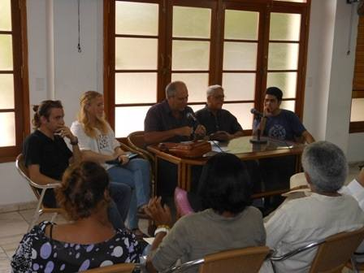

Di: Camilo García Lopez-trigo.


Las palabras de bienvenida corrieron a cargo del poeta Alpidio Alonso, Vicepresidente de la Asociación de Escritores y director de la revista Amnios, quien alabó este comienzo porque “al retomar el papel de Feijoo en la cultura nacional se hace justicia”, calificándole “quizás –después de José Martí– como el más prolífero de nuestros hombres de letras.”
Resaltó la dimensión humanista de su obra, con franca vocación universal, y lamentó que sus libros –como los de muchos otros grandes de nuestra literatura– se han convertido en “rarezas editoriales”, mucho más cuando se trata de poesía. Consideró entonces que este homenaje es como “romper una lanza frente a la desidia y la desmemoria” y destacó el simbolismo que representa su figura a inicios del Festival de Poesía, como reflejo de una cultura de resistencia.
D'altro canto, el también poeta, ensayista e investigador literario Virgilio López Lemus, quien sirvió de moderador del panel, coincidió con las observaciones de Alpidio al recordar que muchos consideran a Feijó como uno de los cuatro pilares de la literatura cubana, junto a Carpentier, Lezama y Guillén. Calificó como “un extraordinario logro” que se retome su figura e influencia en nuestra cultura pues, de esos cuatro, es el menos conocido y difundido en el exterior, lo cual lo convierte en “un gran desconocido de la lengua española” a pesar de ser una de las “figuras capitales de la literatura cubana del siglo XX”.
Estudios sobre Feijoo entre los estudiantes universitarios
Poi, tres estudiantes de cuarto año de la Facultad de Artes y Letras intervinieron en el panel para presentar sus perspectivas sobre el escritor homenajeado, a partir de un evento que se realizara en la Universidad de la Habana en celebración a este centenario.
Daína, la primera en hablar, centró su análisis en el trabajo realizado por Feijoo en la revista Segni, que fue creada y dirigida durante varios años por este escritor de formación autodidacta y en la que reflejó su voluntad vanguardista. Aclaró que la asimilación de la vanguardia en este caso fue con un espíritu abierto, pues se trataba de una transgresión cultural y una ruptura a los estilos establecidos, caracterizada por una convivencia sin privilegios entre los diferentes estilos literarios y una autonomía semántica y espacial de la gráfica.
Nils fue el segundo en hablar, quien reflexionó sobre Juan Quinquín en Pueblo Mocho, una obra particularmente importante en la obra de Feijoo al dibujar con su talento paisajes particulares de una nación desde la sensibilidad popular. Elementos claves para entender su trascendencia son que en ella la naturaleza alcanza una función protagónica, que se destruye el vínculo entre miseria material y espiritual y, soprattutto, que se presenta un héroe nuevo, alejado de los estereotipos urbanos, al tratarse de un campesino que toma una voz reflexiva e interroga su realidad para transformarla.
El último de los estudiantes en intervenir fue Darío, quien particularizó en la poesía de Feijoo, especialmente en su poema Betel en el cual –a través del motivo místico que le cautivara de las sagradas escrituras– expresara la forma sincera y la recta afinación que caracterizara su obra poética. Al ser un “poeta de la vivencia” y “del campo cubano”, lo caracterizó como habitante de la poesía y del misterio, pero no con la actitud del filosofo que busca en lo abstracto sino en el conocimiento más inmediato de “su ser”.
Virgilio López Lemus alabó como “un hermoso homenaje” la novedad de que la Universidad cubana realice una labor investigativa sobre Feijoo, tal y como fue apreciado en este panel. Sobre todo porque se trata de un autor que dejó más de 70 revistas –que eran, en la práctica, 70 obras de arte–, 25 libros de poemas, 3 de cuentos, 8 de reflexiones, 3 de crítica literaria, 5 novelas… lo cual demuestra una fructífera labor creativa que está aún por investigar a profundidad y donde los estudiantes pueden realizar un intenso trabajo.
Destacó su significado para la cultura cubana como “algo fundacional e innovador”, creador de “una poética, una teoría de la poesía”, la cual se refleja en toda su obra, incluso en la pintura. Señaló que con sus aportes elevó a la cima un movimiento lírico fundado por los poetas neoclásicos, que se centra en el canto a la naturaleza pero no desde una visión meramente paisajista sino insertado en el ser y en la fuerza creativa que ella esconde, que llevamos dentro nosotros mismos.
Indicó además los muchos puntos de contactos que tuvo con otros autores latinoamericanos, que lo convirtió en un extraordinario puntal de la identidad latinoamericana.
Continuidad y homenaje de la revista Signos
La velada fue momento propicio para el lanzamiento del No. 67 de la revista Signos, correspondiente a los meses de enero a junio de 2014, que fue dedicada íntegramente a su fundador.
Durante la presentazione, su editor Edelmis Anoceto realizó un breve recorrido por la historia de la revista que, desde su fundación en 1969 y hasta 1985, Feijoo dedicara sus mayores esfuerzos artísticos y culturales. Tras algunos años de receso, in 1988 se continuó realizando pero no ya como un proyecto personal sino como una publicación institucional, a cargo del Centro del Libro de Villa Clara.
Resaltó que este número constituye un primer intento de “breve antología” –pues cualquier intento de resumir la obra de Feijoo tendrá que ser necesariamente breve– en la cual se recogen poemas y pensamientos, correspondencia, dibujos, trabajos periodísticos, cuentos, escritos de etnología y folklore, poesie, críticas literarias, obras de humor, fotografías, para culminar con una cronología de su vida y su obra a cargo de Virgilio López Lemus.
Según la publicación, se ha querido aprovechar la oportunidad para “redescubrirlo en su dimensión cósmica, atravesada siempre por la intensidad y el enjundioso desenfado de una obra imposible de compendiar”. Al mismo tiempo Edelmis señaló que, a pesar de su portada en negro, es una revista festiva pues también celebra la feliz coincidencia del 45 aniversario de su fundación, en la que pusieron todo su empeño en resaltar “al ser humano y al pensador que mantuvo una postura ética profunda en su creación”.